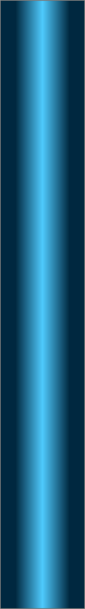
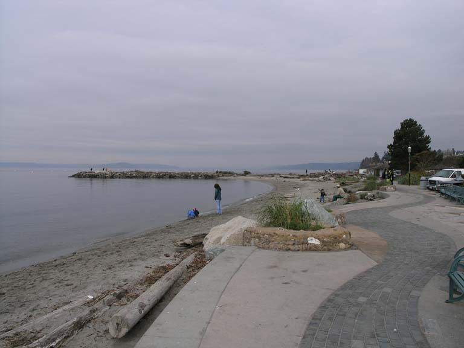
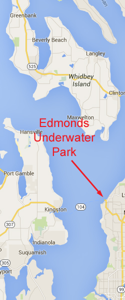

<!doctype html>
<html>
<head>
<meta charset="utf-8">
<title>Lawson Bluff</title>
<meta name="generator" content="WYSIWYG Web Builder - http://www.wysiwygwebbuilder.com">
<link href="Emerald_Diving.css" rel="stylesheet">
<link href="edmonds_up_frame.css" rel="stylesheet">
<script>
function onChangeGoMenu2(){var a=document.getElementById('GoMenu2-select'),b=a.options[a.selectedIndex].value,c=a.options[a.selectedIndex].className;a.selectedIndex=0;a.blur();b&&(NewWin=window.open(b,c),window.NewWin.focus())};
</script>
</head>
<body>
<script>
var gaJsHost = (("https:" == document.location.protocol) ? "https://ssl." : "http://www.");
document.write(unescape("%3Cscript src='" + gaJsHost + "google-analytics.com/ga.js' type='text/javascript'%3E%3C/script%3E"));
</script>
<script>
try {
var pageTracker = _gat._getTracker("UA-15987748-1");
pageTracker._trackPageview();
} catch(err) {}</script>

<div id="container">
<div id="wb_Shape1431" style="position:absolute;left:670px;top:655px;width:378px;height:2699px;z-index:3;">
</div>
<div id="wb_MasterPage1" style="position:absolute;left:0px;top:1px;width:1047px;height:62px;z-index:4;">
<div id="wb_Shape1" style="position:absolute;left:0px;top:5px;width:1047px;height:57px;z-index:0;">
</div>
<div id="wb_Text2" style="position:absolute;left:20px;top:5px;width:169px;height:16px;z-index:1;">
<span style="color:#FFFFFF;font-family:Arial;font-size:13px;"><em><a href="./local_sites_ps.html">Return to Puget Sound Map</a></em></span></div>
<div id="wb_GoMenu2" style="position:absolute;left:800px;top:5px;width:225px;height:25px;z-index:2;">
<form id="GoMenu2" role="menu">
<select id="GoMenu2-select" name="GoMenu2" onchange="onChangeGoMenu2()">
<option class="_self" value="#" selected>Select a Dive Site</option>
<option class="_self" value="./alki_reef_frame.html" role="menuitem">Alki Reef</option>
<option class="_self" value="./blakely_harbor_frame.html" role="menuitem">Blakely Harbor Reef</option>
<option class="_self" value="./blakely_rock_reef_frame.html" role="menuitem">Blakely Rock Reef</option>
<option class="_self" value="./blakely_rock_wall_frame.html" role="menuitem">Blakely Rock Wall</option>
<option class="_self" value="./dabob_frame.html" role="menuitem">Dabab Seamount</option>
<option class="_self" value="./dalco_wall_frame.html" role="menuitem">Dalco Wall</option>
<option class="_self" value="./day_island_frame.html" role="menuitem">Day Island Wall</option>
<option class="_self" value="./edmonds_up_frame.html" role="menuitem">Edmonds UW Park</option>
<option class="_self" value="./flagpole_point_frame.html" role="menuitem">Flagpole Point</option>
<option class="_self" value="./four_mile_barges_frame.html" role="menuitem">Four Mile Barges</option>
<option class="_self" value="./gedney_bar_frame.html" role="menuitem">Gedney Bar</option>
<option class="_self" value="./gedney_barges_frame.html" role="menuitem">Gedney Barges</option>
<option class="_self" value="./gedney_reef_frame.html" role="menuitem">Gedney Reef</option>
<option class="_self" value="./kvi_tower_frame.html" role="menuitem">KVI Tower</option>
<option class="_self" value="./point_def_n_frame.html" role="menuitem">Point Defiance N Wall</option>
<option class="_self" value="./possession_fingers_frame.html" role="menuitem">Possession Fingers</option>
<option class="_self" value="./pulali_wall_frame.html" role="menuitem">Pulali Wall</option>
<option class="_self" value="./shilshole_wrecks.html" role="menuitem">Shilshole Wrecks</option>
<option class="_self" value="./sunrise_beach_frame.html" role="menuitem">Sunrise Beach</option>
<option class="_self" value="./three_tree_frame.html" role="menuitem">ThreeTree Point</option>
<option class="_self" value="./waterman_frame.html" role="menuitem">Waterman Wall</option>
</select>
</form>
</div>
</div>
<div id="wb_Text143" style="position:absolute;left:7px;top:1227px;width:477px;height:2px;z-index:5;">
&nbsp;</div>
<div id="wb_Image2" style="position:absolute;left:0px;top:58px;width:794px;height:594px;z-index:6;">
</div>
<div id="wb_Text3" style="position:absolute;left:22px;top:68px;width:592px;height:55px;z-index:7;">
<span style="color:#009300;font-family:Arial;font-size:48px;">Edmonds Underwater Park</span></div>
<div id="wb_Text4" style="position:absolute;left:0px;top:671px;width:555px;height:2px;z-index:8;">
&nbsp;</div>
<div id="wb_Text5" style="position:absolute;left:0px;top:655px;width:657px;height:2683px;z-index:9;">
<span style="color:#FFFFFF;font-family:Arial;font-size:15px;"><strong>Topography: </strong>Gently sloping sandy substrate with numerous man-made structures purposely established to serve as artificial reefs. <br><br><strong>Puget Sound marine life rating: </strong>5<strong><br></strong><br><strong>Puget Sound structure rating: </strong>2<br><br><strong>Highlight: </strong>Monster lingcod and giant cabezon. Health reserves of large rockfish, perch, other fish, and invertebrates. <br><br><strong>Diving depth: </strong>40 feet<strong><br><br>Skill level: </strong>Novice<br><br><strong>GPS coordinates: </strong>N47° 48.807’&nbsp; W122° 22.952’<br><br><strong>Access by boat:</strong> Edmonds is located along the eastern shoreline of Puget Sound between Seattle and Everett. The Edmonds ferry landing is situated immediately south of the marine park. A prominent rock breakwater divides the underwater marine park in two. <br><br>Because this is a marine sanctuary and an established underwater park, boats are NOT allowed in the park area.<br><strong><br>Shore access:<br><br></strong>From I-5, take exit 177 and follow the Edmonds ferry traffic signs all the way to the ferry pay station.<br><br>Stay to the left of the pay station and drive to the stoplight at the front of the ferry holding area. <br><br>At the light at the front of the ferry holding area, turn left towards the ferry landing.<br><br>Take the next right into Edmonds Underwater Park (aka Bracket’s Landing), just before the ferry terminal.<br> <br><strong>Dive profile: </strong>Edmonds Underwater Park is truly a mixed bag of artificial reef structure. The underwater attractions were placed here with the dual intention of providing refuge for marine life and entertaining divers. The park is set up with underwater guide ropes that run north-south and east-west to form a grid. Many of the attractions are marked with surface buoys. The best way to tell where things are is to use the large map of the park located on the west wall of the bathroom facilities. You can also buy a map of the park at Underwater Sports, which is about a half mile south of the park. Proceeds from maps sales help pay for park maintenance. Please note there is absolutely no harvesting of anything within this marine reserve, no exceptions.<br><br>The park offers a wide variety of structure to dive on, including old pleasure boats, large concrete blocks, tire piles, rock piles, a giant coiled spring, and an old wooden tugboat that is now severely decomposed.<br><br>My favorite attraction within the park used to be the old sunken dry dock along the southern park boundary by the ferry landing. The dry dock is covered with giant plumose anemones and is home to some very big rockfish and lingcod. Authorities used to “look the other way” and allowed divers to visit the dry dock even though it is within the 300 foot restricted zone that encircles the ferry landing. A few disoriented divers ended up in front of the ferry landing and endangered their lives in addition to interrupting ferry service. The restricted zone is now strictly enforced and the dry dock is legally off limits, as are any of the underwater attractions within a 300 foot radius of the ferry landing.<br><br>My dives now start close to the jetty and head west until I pick up a north-south guide rope. The “Jetty Way” guide rope starts at the end of the breakwater and intersects several north-sound guide ropes to the west. I follow one of these ropes north until I hit my turn point. Several north-south guide ropes run in parallel at various depths. A number of east-west ropes cross the north-south ropes to complete the grid. The ropes are sometimes hard to follow as they are often buried in kelp.<br><br>A large wooden tugboat named the “Triumph” was sunk in the park in 1999. She is 85 feet in length and rests in about 35 feet of water west of the jetty. Although she was a gallant wreck in 1999, she has decomposed to the point where she is hardly recognizable as a vessel. This immense lumber pile has become a favorite haunt for lingcod and cabezon. A number of smaller wrecks surround the “Triumph”.<br><br>The substrate in the park gains depth very gradually. Most of the underwater attractions are placed at least 100 yards offshore so they sit in at least 20 feet of water. The sandy substrate closer to shore encompasses robust eelgrass beds and occasional rocks. <br><br>A strong north wind can really play havoc with this site. Waves battering the shore from the north reduce visibility to less than 10 feet and make surface swims difficult.&nbsp; I only dive this park when winds are light or out of the south. <br>A special thanks to all of the diligent and hard working volunteers that make this park a very special place to dive. <br><strong><br>My preferred gas mix: </strong>Air<br><strong><br>Current observations: </strong><br><br><em>Tide Station: </em>Seattle <br><em>Noted high tide correction for Edmonds:</em> <br><br>Tidal current in the underwater park is generally negligible. I have noted current at times, but it hasn’t affected my dive plan. Several of my friends insist that they have encountered strong current within the park, but I haven’t in my 10 years of diving this extraordinary location.<br><br>I dive this site during high water to increase the chance of improving visibility. Any significant wave action can really stir up the sandy substrate at low tide. I also dive this site during early morning, especially in summer. Hundreds of divers frequent this park on nice weekends, including entry level scuba classes. Visibility in the park drops markedly as divers stir up the sandy substrate.<br><br>Please note that night diving in Edmonds Underwater Park requires a permit. The permit is easy to obtain by calling the City of Edmonds.<br><br><strong>Boat Launch:<br></strong></span><span style="color:#FFFFFF;font-family:Symbol;font-size:15px;"><br></span><span style="color:#FFFFFF;font-family:Arial;font-size:15px;">None. Boats are not allowed in this park.<br><strong><br>Facilities: </strong>Edmonds Underwater Park has excellent facilities. Parking is available for about 30 cars. Parking is often tight on sunny weekends as this park is very popular with divers and non-divers alike. The park offers plumbed restroom facilities, a changing area, an outdoor fresh water shower (turned off during the winter), picnic benches, and nearby restaurants. Air fills are available about half a mile to the south at Underwater Sports. A large map of the underwater park is posted on the west side of the restrooms.<strong><br><br>Hazards: <br></strong></span><span style="color:#FFFFFF;font-family:Symbol;font-size:15px;"><br></span><span style="color:#FFFFFF;font-family:Arial;font-size:15px;">Long swims: Surface or underwater swims are lengthy (100+ yards at high tide) to reach many of the underwater attractions.<br></span><span style="color:#FFFFFF;font-family:Symbol;font-size:15px;"><br></span><span style="color:#FFFFFF;font-family:Arial;font-size:15px;">Ferry landing: A ferry landing boarders the southern perimeter of the park. It is illegal to dive within 100 yards of the ferry landing. Accidentally wandering into the ferry lane could result in police intervention, injury, or even death. <br><br>Current: A strong wind can produce surface current.<br></span><span style="color:#FFFFFF;font-family:Symbol;font-size:15px;">&nbsp; <br></span><span style="color:#FFFFFF;font-family:Arial;font-size:15px;">Exposure: A strong north wind will result in heavy wave action on the beach, adversely affecting underwater visibility and making surfaces swims difficult.<br><br>Snagging hazards: Some of the wrecks (the wooden wrecks in particular) and other structures within the park pose potential snagging hazards. <br><br>Navigation: Proper compass operation may be affected by the iron in some underwater attractions.<br><br><strong>Marine life: </strong>The words “Edmonds Underwater Park” mean one thing to avid Northwest divers: Big fish, and lots of them. Many of the resident fish in this marine sanctuary have had an opportunity to grow large. The lingcod in this park are legendary. Big females five feet in length are common. They hang out anywhere ample structure exists, such as around the concrete blocks or wrecks. <br><br>Cabezon grow over 30 inches long. These massive scuplins are fairly mellow unless they are guarding an egg nest - then look out. I have had many encounters with these bold fish as they try to run me off. I usually see the attack coming, but not always. A very large cabezon caught me by surprise on one occasion and grabbed the entire back of my head and shook vigorously. I thought my dive buddy was messing with me, but when I turned around I was starring at a very large and upset cabezon. I am thankful cabezon don’t have long teeth.<br><br>If I see a cabezon or lingcod protecting a nest, I simply avoid it. Most animals are very protective of their young, and cabezon and lingcod are no different. Cabezon egg clusters are purple and lingcod egg clusters are white. Both are readily found through the underwater park in winter months.<br><br>Resident rockfish get much bigger in this park than most places in the Puget Sound. Large quillback, copper, and brown rockfish are all very abundant throughout the park. I occasionally find a few large black rockfish hovering about some of the attractions.<br><br>Many of the marker buoy lines within the park are heavily encrusted with magnificent colorful tube worms and small anemones. I splash light on these ropes as I pass by and admire the dramatic explosion of color. <br><br>The sandy flats and eelgrass beds gracing the shoreline are a great place to find various invertebrates, including spotted San Diego dorids and large moon snails. Pelagic lion nudibranchs invade the park during summer and infest the eelgrass beds. <br>Edmonds Underwater Park is truly a sanctuary for marine life and a living testimony that nature is resourceful when left alone. It is a shame we havent created similar sanctuaries throughout Puget Sound.</span></div>
<div id="wb_Image1" style="position:absolute;left:797px;top:58px;width:244px;height:594px;z-index:10;">
</div>
<div id="wb_Image3" style="position:absolute;left:680px;top:679px;width:352px;height:262px;z-index:11;">
</div>
<div id="wb_Image4" style="position:absolute;left:680px;top:944px;width:352px;height:262px;z-index:12;">
</div>
<div id="wb_Image5" style="position:absolute;left:680px;top:1209px;width:352px;height:262px;z-index:13;">
</div>
<div id="wb_Image6" style="position:absolute;left:680px;top:1474px;width:352px;height:262px;z-index:14;">
</div>
<div id="wb_Image7" style="position:absolute;left:680px;top:1739px;width:352px;height:262px;z-index:15;">
</div>
<div id="wb_Text6" style="position:absolute;left:868px;top:688px;width:164px;height:16px;z-index:16;">
<span style="color:#FFFFFF;font-family:Arial;font-size:13px;"><em>Giant Plumose Anemones</em></span></div>
<div id="wb_Text7" style="position:absolute;left:645px;top:951px;width:153px;height:16px;text-align:right;z-index:17;">
<span style="color:#FFFFFF;font-family:Arial;font-size:13px;"><em>Northern Kelp Crab</em></span></div>
<div id="wb_Text8" style="position:absolute;left:856px;top:1223px;width:172px;height:16px;text-align:right;z-index:18;">
<span style="color:#FFFFFF;font-family:Arial;font-size:13px;"><em>Monterey Dorid</em></span></div>
<div id="wb_Text9" style="position:absolute;left:689px;top:1481px;width:139px;height:16px;z-index:19;">
<span style="color:#FFFFFF;font-family:Arial;font-size:13px;"><em>Copper Rockfish</em></span></div>
<div id="wb_Text10" style="position:absolute;left:687px;top:1747px;width:153px;height:16px;z-index:20;">
<span style="color:#FFFFFF;font-family:Arial;font-size:13px;"><em>Puget Sound King Crab</em></span></div>
<div id="wb_Text12" style="position:absolute;left:692px;top:661px;width:357px;height:15px;text-align:center;z-index:21;">
<span style="color:#FFFFFF;font-family:Arial;font-size:12px;"><em>Underwater imagery from this site</em></span></div>
<div id="wb_Image8" style="position:absolute;left:680px;top:2004px;width:352px;height:262px;z-index:22;">
</div>
<div id="wb_Image9" style="position:absolute;left:680px;top:2269px;width:352px;height:262px;z-index:23;">
</div>
<div id="wb_Text11" style="position:absolute;left:691px;top:2010px;width:153px;height:16px;z-index:24;">
<span style="color:#FFFFFF;font-family:Arial;font-size:13px;"><em>Cabezon</em></span></div>
<div id="wb_Text13" style="position:absolute;left:688px;top:2275px;width:153px;height:16px;z-index:25;">
<span style="color:#FFFFFF;font-family:Arial;font-size:13px;"><em>Cabezon</em></span></div>
<div id="wb_Image10" style="position:absolute;left:680px;top:2534px;width:352px;height:262px;z-index:26;">
</div>
<div id="wb_Text14" style="position:absolute;left:621px;top:2543px;width:153px;height:16px;text-align:right;z-index:27;">
<span style="color:#FFFFFF;font-family:Arial;font-size:13px;"><em>Sunflower Star</em></span></div>
<div id="wb_Image11" style="position:absolute;left:680px;top:2799px;width:352px;height:262px;z-index:28;">
</div>
<div id="wb_Image12" style="position:absolute;left:680px;top:3064px;width:352px;height:262px;z-index:29;">
</div>
<div id="wb_Text1" style="position:absolute;left:872px;top:2807px;width:153px;height:16px;text-align:right;z-index:30;">
<span style="color:#FFFFFF;font-family:Arial;font-size:13px;"><em>White Lined Dirona</em></span></div>
<div id="wb_Text254" style="position:absolute;left:649px;top:3075px;width:153px;height:16px;text-align:right;z-index:31;">
<span style="color:#FFFFFF;font-family:Arial;font-size:13px;"><em>Quillback Rockfish</em></span></div>
<div id="wb_Image13" style="position:absolute;left:7px;top:3415px;width:617px;height:760px;z-index:32;">
</div>
<div id="wb_Text2" style="position:absolute;left:4px;top:3362px;width:1041px;height:36px;z-index:33;">
<span style="color:#009300;font-family:Arial;font-size:32px;">Composite Photography From Edmonds Underwater Park</span></div>
</div>
</body>
</html>